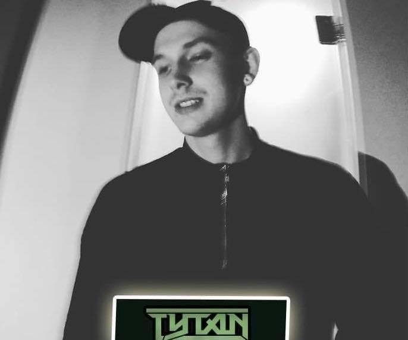

A well-seasoned DJ based in Southampton, with international appearances, TYTAN has been involved in the drum and bass scene for almost a decade. Regularly performing in clubs and festivals across the nation, TYTAN showcases a wide range of genres, from Jungle to Neurofunk.
From humble beginnings as a low-profile club DJ, TYTAN has pushed his talents to performing with some of the leading brands in the scene. When he’s not playing across the globe, he’s honing his craft curating the Arts & Music festival Indigenous. When he’s not playing out or handling logistics for Indigenous, TYTAN is producing. Using Logic and Ableton to make music and sound design for film, TYTAN always has his hands full. Watch this space for new releases from TYTAN!